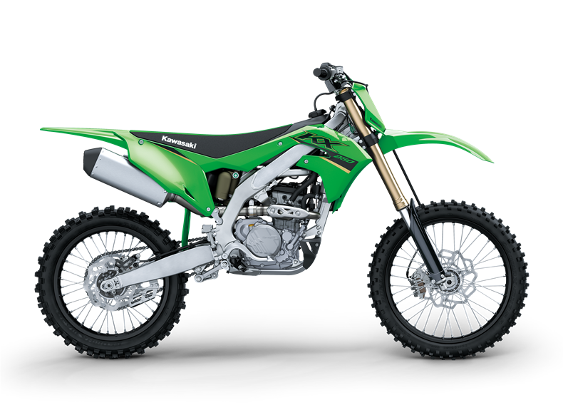

The Kawasaki KX 250F is a liquid-cooled DOHC 249 cc (15.2 cu in) four-valve four-stroke single motocross motorcycle made by Kawasaki. The Kawasaki KX250F was co-developed with the Suzuki Motor Co. under their unique joint venture that started in 2002. This joint venture produced the Suzuki RMZ250 which is the mechanical twin to the KX250F but is in yellow Suzuki markings. The first year of the KX250F was 2004 and it saw immediate success in Supercross and Motocross racing capturing the East/West SX championships as well as the national MX title. For the 2006 model year, Kawasaki took its own separate route in 250F development by releasing an all-new bike that had no ties with Suzuki. The 2006 model features an all-new aluminum perimeter frame, a heavily revised engine, new Showa front and rear shocks, and Renthal handlebars. The new KX was very competitive, ranking highly in motocross magazine shootouts as well as in competition. The 2008 KX250F has continued its reputation as a good bike, being highly regarded in all dirtbike shootouts. In 2009, Kawasaki overhauled the KX250F with a lot more than a new look. These include numerous engine enhancements to increase power and save weight, upgrades to the suspension, including a titanium coating to reduce friction, and a few chassis changes which help improve cornering and create an overall slimmer feel. In 2011, Kawasaki added two new major features. The first was a digital fuel injection (DFI) system. This system was similar to the one found on the more powerful KX450F. It greatly improved engine response time and reduced hesitation when landing after a jump. The second addition was Showa's separate function fork (SFF). These new forks lowered weight, improved performance, and allowed for easier adjustability. In 2012, a second fuel injector was added increasing horsepower over the 2011 model. Kawasaki once again revamped the KX250F in 2013. They created a new look along with enhancements to the fuel injection system and separate function forks.
